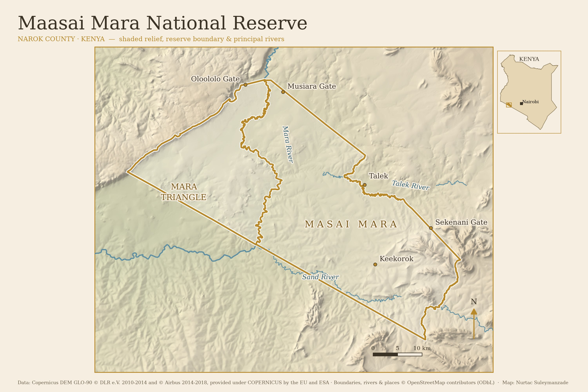
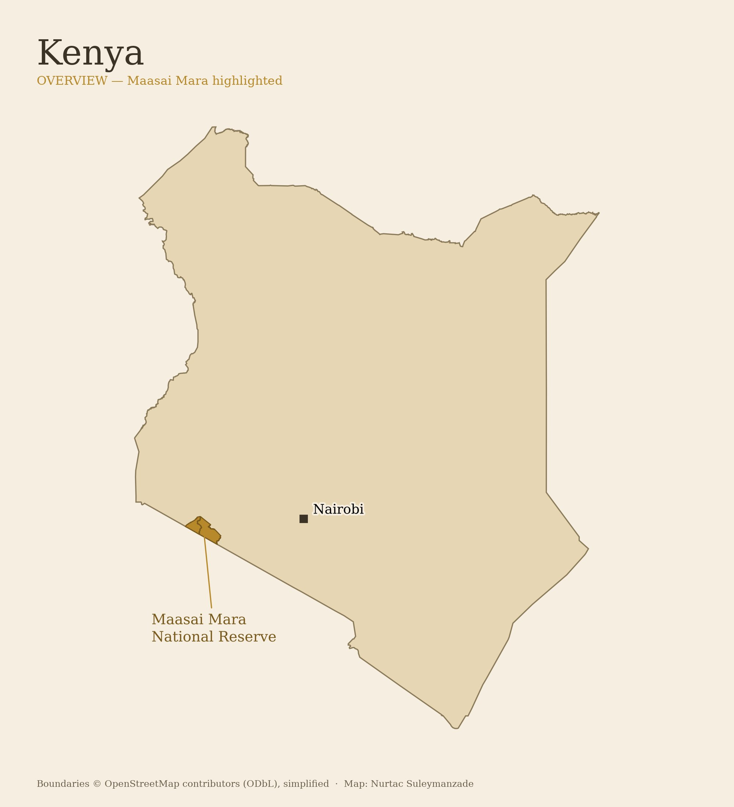

Maasai Mara National Reserve
EDITORIAL SHADED-RELIEF MAP SAMPLE · SAFARI CARTOGRAPHY

Kenya overview

Data: Copernicus DEM GLO-90 (ESA/EU, Airbus, DLR) · Boundaries, rivers & places © OpenStreetMap contributors (ODbL). Hillshade and styling: Nurtac Suleymanzade. Click images for full-resolution PNG.